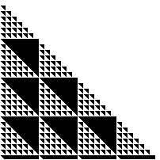
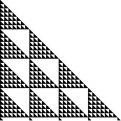

4. (mod 7) Shading the boxes of Pascal's triangle with numbers congruent to
|  |  |
| 0 (mod 7) | 1, 2, 3, 4, 5, or 6 (mod 7) |
| Because 7 is prime, Z7 has no proper subgroups. |
| Consequently, there are no nontrivial cosets or quotient groups. |
Return to Other Mod Exercises.